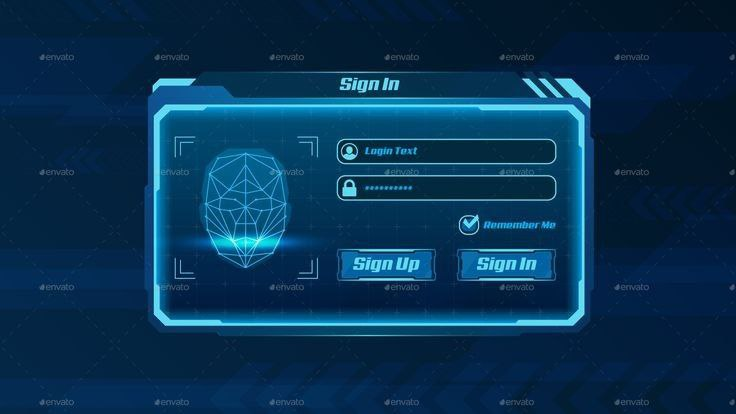

Developer Roadmaps
Projects + Source Code in 2023 | Beginner to Pro
Backend Developer
This CSS code snippet helps you to create business cards or team page cards with a flip effect. The cards come with linear-gradient background color and a smooth transition flip effect. The given HTML code can be used to create a team page on a website.
python
c++
Simple Homepage With Wavy Background Animation | CSS Animation
java
